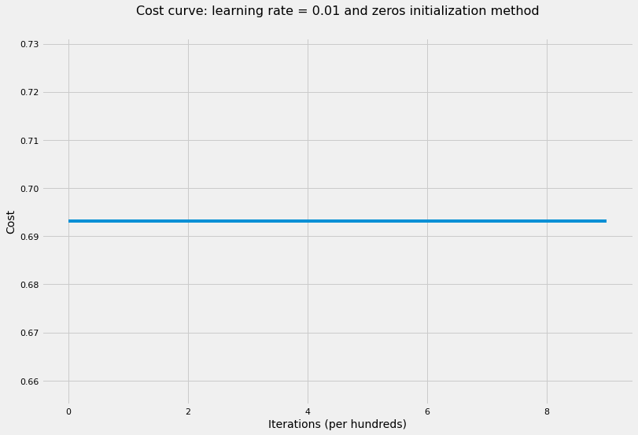
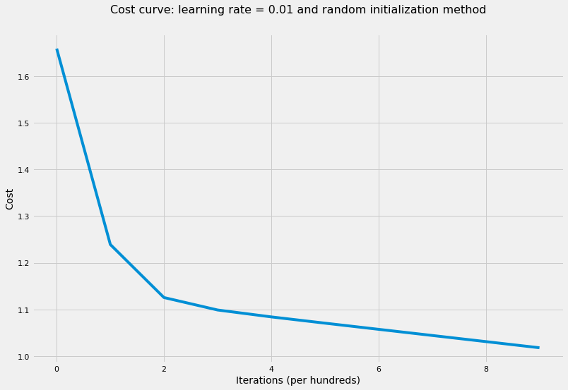
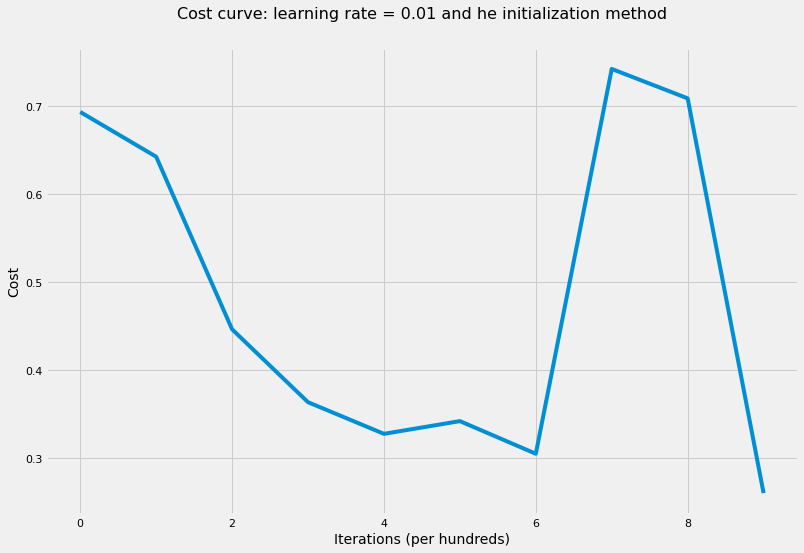
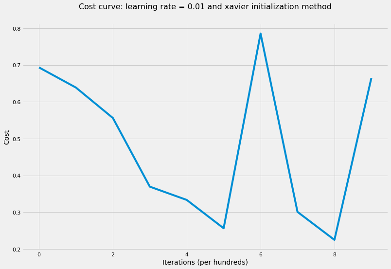

The role of parameter initialization in training and different ways to initialize parameters.
Machine Learning
Deep Learning
Published
April 20, 2018
Introduction
Optimization, in Machine Learning/Deep Learning contexts, is the process of changing the model’s weights to improve its performance. In other words, it’s the process of finding the best weights in the predefined hypothesis space to get the best possible performance. There are three kinds of optimization algorithms:
Optimization algorithm that is not iterative and simply solves for one point.
Optimization algorithm that is iterative in nature and converges to acceptable solution regardless of the parameters initialization such as gradient descent applied to logistic regression.
Optimization algorithm that is iterative in nature and applied to a set of problems that have non-convex loss functions such as neural networks. Therefore, parameters’ initialization plays a critical role in speeding up convergence and achieving lower error rates.
In this article, we’ll look at three different cases of parameters’ initialization and see how this affects the error rate:
Initialize all weights to zero.
Initialize weights to random values from standard normal distribution or uniform distribution and multiply it by a scalar such as 10.
To illustrate the above cases, we’ll use the cats vs dogs dataset which consists of 50 images for cats and 50 images for dogs. Each image is 150 pixels x 150 pixels on RGB color scale. Therefore, we would have 67,500 features where each column in the input matrix would be one image which means our input data would have 67,500 x 100 dimension.
Let’s first load the data and show a sample of two images before we start the helper functions.
Code
import sysimport h5pyimport matplotlib.pyplot as pltimport numpy as npimport seaborn as snssys.path.append("../../scripts/")from coding_neural_network_from_scratch import ( L_model_forward, compute_cost, L_model_backward, update_parameters, accuracy,)from load_dataset import load_dataset_catvsdog%matplotlib inlinesns.set_context("notebook")plt.style.use("fivethirtyeight")
Code
X, Y = load_dataset_catvsdog("../../data")# show a sample of of a cat and a dog imageindex_cat = np.argmax(Y)index_dog = np.argmin(Y)plt.subplot(1, 2, 1)plt.imshow(X[:, index_cat].reshape(150, 150, 3).astype(int))plt.axis("off")plt.subplot(1, 2, 2)plt.imshow(X[:, index_dog].reshape(150, 150, 3).astype(int))plt.axis("off")# standarize the dataX = X /255
Code
def model( X, Y, layers_dims, learning_rate=0.01, num_iterations=1000, print_cost=True, hidden_layers_activation_fn="relu", initialization_method="he",):""" Implements multilayer neural network using gradient descent as the learning algorithm. Arguments --------- X : 2d-array data, shape: number of examples x num_px * num_px * 3. y : 2d-array true "label" vector, shape: 1 x number of examples. layers_dims : list input size and size of each layer, length: number of layers + 1. learning_rate : float learning rate of the gradient descent update rule. num_iterations : int number of iterations of the optimization loop. print_cost : bool if True, it prints the cost every 100 steps. hidden_layers_activation_fn : str activation function to be used on hidden layers: "tanh", "relu". initialization_method : str specify the initialization method to be used: "he", "xavier". Returns ------- parameters : dict parameters learnt by the model. They can then be used to predict test examples. """ np.random.seed(1)# initialize cost list cost_list = []# initialize parametersif initialization_method =="zeros": parameters = initialize_parameters_zeros(layers_dims)elif initialization_method =="random": parameters = initialize_parameters_random(layers_dims)else: parameters = initialize_parameters_he_xavier(layers_dims, initialization_method)# iterate over num_iterationsfor i inrange(num_iterations):# iterate over L-layers to get the final output and the cache AL, caches = L_model_forward(X, parameters, hidden_layers_activation_fn)# compute cost to plot it cost = compute_cost(AL, Y)# iterate over L-layers backward to get gradients grads = L_model_backward(AL, Y, caches, hidden_layers_activation_fn)# update parameters parameters = update_parameters(parameters, grads, learning_rate)# append each 100th cost to the cost listif (i +1) %100==0and print_cost:print("The cost after {} iterations is: {}".format(i +1, cost))if i %100==0: cost_list.append(cost)# plot the cost curve plt.figure(figsize=(12, 8)) plt.plot(cost_list) plt.xlabel("Iterations (per hundreds)", fontsize=14) plt.ylabel("Cost", fontsize=14) plt.title("Cost curve: learning rate = {} and {} initialization method".format( learning_rate, initialization_method ), y=1.05, fontsize=16, )return parameters
Initializing all weights to zero
Here, we’ll initialize all weight matrices and biases to zeros and see how this would affect the error rate as well as the learning parameters.
Code
def initialize_parameters_zeros(layers_dims):""" Initializes the parameters dictionary to all zeros for both weights and bias. Arguments --------- layer_dims : list input size and size of each layer, length: number of layers + 1. Returns ------- parameters : dict weight matrix and the bias vector for each layer. """ np.random.seed(1) parameters = {} L =len(layers_dims)for l inrange(1, L): parameters["W"+str(l)] = np.zeros((layers_dims[l], layers_dims[l -1])) parameters["b"+str(l)] = np.zeros((layers_dims[l], 1))return parameters
Code
# train NN with zeros initialization weightslayers_dims = [X.shape[0], 5, 5, 1]parameters = model( X, Y, layers_dims, hidden_layers_activation_fn="tanh", initialization_method="zeros")accuracy(X, parameters, Y, "tanh")
The cost after 100 iterations is: 0.6931471805599453
The cost after 200 iterations is: 0.6931471805599453
The cost after 300 iterations is: 0.6931471805599453
The cost after 400 iterations is: 0.6931471805599453
The cost after 500 iterations is: 0.6931471805599453
The cost after 600 iterations is: 0.6931471805599453
The cost after 700 iterations is: 0.6931471805599453
The cost after 800 iterations is: 0.6931471805599453
The cost after 900 iterations is: 0.6931471805599453
The cost after 1000 iterations is: 0.6931471805599453
'The accuracy rate is: 50.00%.'

As the cost curve shows, the neural network didn’t learn anything! That is because of symmetry between all neurons which leads to all neurons have the same update on every iteration. Therefore, regardless of how many iterations we run the optimization algorithms, all the neurons would still get the same update and no learning would happen. As a result, we must break symmetry when initializing weights so that the model would start learning on each update of the gradient descent.
Initializing weights with big random values
There is no big difference if the random values are initialized from standard normal distribution or uniform distribution so we’ll use standard normal distribution in our examples. Also, we’ll multiply the random values by a big number such as 10 to show that initializing weights to big values may cause our optimization to have higher error rates (and even diverge in some cases). Let’s now train our neural network where all weight matrices have been intitialized using the following formula: np.random.randn() * 10
Code
def initialize_parameters_random(layers_dims):""" Initializes the parameters dictionary rabdomly from standard normal distribution multiplied by 10 for weight matrices and zeros for bias vectors. Arguments --------- layer_dims : list input size and size of each layer, length: number of layers + 1. Returns ------- parameters : dict weight matrix and the bias vector for each layer. """ np.random.seed(1) parameters = {} L =len(layers_dims)for l inrange(1, L): parameters["W"+str(l)] = ( np.random.randn(layers_dims[l], layers_dims[l -1]) *10 ) parameters["b"+str(l)] = np.zeros((layers_dims[l], 1))return parameters
Code
# train NN with random initialization weightslayers_dims = [X.shape[0], 5, 5, 1]parameters = model( X, Y, layers_dims, hidden_layers_activation_fn="tanh", initialization_method="random",)accuracy(X, parameters, Y, "tanh")
The cost after 100 iterations is: 1.2413142077549013
The cost after 200 iterations is: 1.1258751902393416
The cost after 300 iterations is: 1.0989052435267657
The cost after 400 iterations is: 1.084096647128233
The cost after 500 iterations is: 1.070695329210598
The cost after 600 iterations is: 1.0574847320236294
The cost after 700 iterations is: 1.0443168708889223
The cost after 800 iterations is: 1.031157857251139
The cost after 900 iterations is: 1.0179838815204905
The cost after 1000 iterations is: 1.0047670885153432
'The accuracy rate is: 55.00%.'

Random initialization here is helping but still the loss function has high value and may take long time to converge and achieve a significantly low value.
Initializing weights based on He and Xavier recommendations
We’ll explore two initialization methods:
Kaiming He method is best applied when activation function applied on hidden layers is Rectified Linear Unit (ReLU). so that the weight on each hidden layer would have the following variance: \[var(W^l) = \frac{2}{n^{l - 1}}\] We can achieve this by multiplying the random values from standard normal distribution by \(\sqrt{\frac{2}{number\ of\ units\ in \ previous\ layer}}\)
Xavier method is best applied when activation function applied on hidden layers is Hyperbolic Tangent so that the weight on each hidden layer would have the following variance: \[var(W^l) = \frac{1}{n^{l - 1}}\] We can achieve this by multiplying the random values from standard normal distribution by \(\sqrt{\frac{1}{number\ of\ units\ in \ previous\ layer}}\)
We’ll train the network using both methods and look at the results.
Code
def initialize_parameters_he_xavier(layers_dims, initialization_method="he"):""" Initializes the parameters dictionary for weights based on "He" and "Xavier" methods and zeros for bias vectors. Arguments --------- layer_dims : list input size and size of each layer, length: number of layers + 1. initialization_method : str specify the initialization method to be used: "he", "xavier". Returns ------- parameters : dict weight matrix and the bias vector for each layer. """ np.random.seed(1) parameters = {} L =len(layers_dims)if initialization_method =="he":for l inrange(1, L): parameters["W"+str(l)] = np.random.randn( layers_dims[l], layers_dims[l -1] ) * np.sqrt(2/ layers_dims[l -1]) parameters["b"+str(l)] = np.zeros((layers_dims[l], 1))elif initialization_method =="xavier":for l inrange(1, L): parameters["W"+str(l)] = np.random.randn( layers_dims[l], layers_dims[l -1] ) * np.sqrt(1/ layers_dims[l -1]) parameters["b"+str(l)] = np.zeros((layers_dims[l], 1))return parameters
Code
# train NN where all weights were initialized based on He recommendationlayers_dims = [X.shape[0], 5, 5, 1]parameters = model( X, Y, layers_dims, hidden_layers_activation_fn="tanh", initialization_method="he")accuracy(X, parameters, Y, "tanh")
The cost after 100 iterations is: 0.6203611406013776
The cost after 200 iterations is: 0.5123234659821594
The cost after 300 iterations is: 0.46677237621933015
The cost after 400 iterations is: 0.3187255789472014
The cost after 500 iterations is: 0.42826666616322456
The cost after 600 iterations is: 0.36422647591323054
The cost after 700 iterations is: 0.5706298604437564
The cost after 800 iterations is: 0.7309174559673725
The cost after 900 iterations is: 0.26898635456817815
The cost after 1000 iterations is: 0.46540333116680943
'The accuracy rate is: 98.00%.'

Code
# train NN where all weights were initialized based on Xavier recommendationlayers_dims = [X.shape[0], 5, 5, 1]parameters = model( X, Y, layers_dims, hidden_layers_activation_fn="tanh", initialization_method="xavier",)accuracy(X, parameters, Y, "tanh")
The cost after 100 iterations is: 0.6336209080471575
The cost after 200 iterations is: 0.6427985039433041
The cost after 300 iterations is: 0.36738403251144874
The cost after 400 iterations is: 0.47375556172838623
The cost after 500 iterations is: 0.2851099368160619
The cost after 600 iterations is: 0.3806391238429354
The cost after 700 iterations is: 0.29261677834759703
The cost after 800 iterations is: 0.23118565026967375
The cost after 900 iterations is: 0.6721421723051113
The cost after 1000 iterations is: 0.11528517185494602
'The accuracy rate is: 100.00%.'

As shown from applying the four methods, parameters’ initial values play a huge role in achieving low cost values as well as converging and achieve lower training error rates. The same would apply to test error rate if we had test data.
Conclusion
Deep Learning frameworks make it easier to choose between different initialization methods without worrying about implementing it ourselves. Nonetheless, it’s important to understand the critical role initial values of the parameters in the overall performance of the network. Below are some key takeaways:
Well chosen initialization values of weights leads to:
Speed up convergence of gradient descent.
Increase the likelihood of gradient descent to find lower training and generalization error rates.
Because we’re dealing with iterative optimization algorithms with non-convex loss function, different initializations lead to different results.
Random initialization is used to break symmetry and make sure different hidden units can learn different things.
Don’t initialize to values that are too large.
Kaiming He (He) initialization works well for neural networks with ReLU activation function.
Xavier initialization works well for neural networks with Hyperbolic Tangent activation function.